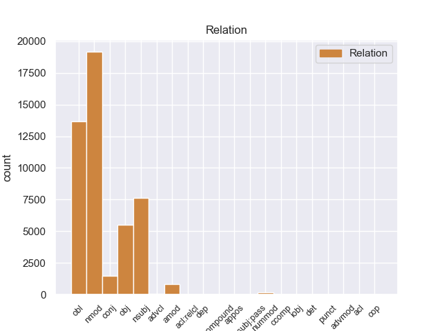
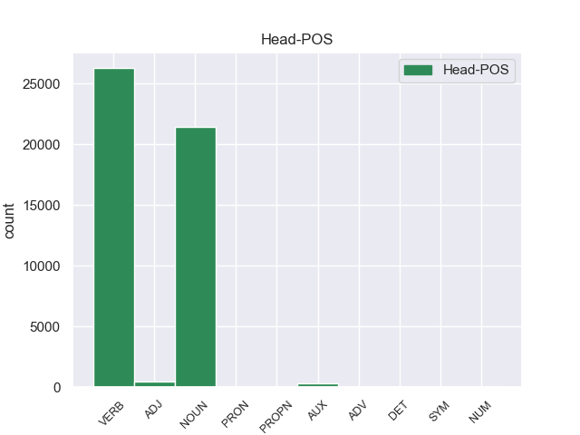
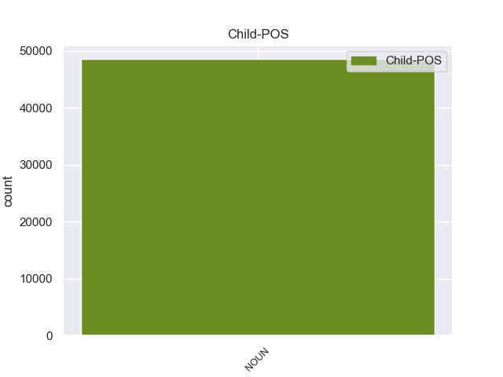

Distribution of features within this leaf



Agreement Rules sorted by frequency.
- When the dependent token is the nominal modifier(nmod) of the head token, and the dependent token is NOUN.
1 En _ _ _ _ 0 _ _ _
2 1991 _ _ _ _ 0 _ _ _
3 , _ _ _ _ 0 _ _ _
4 como _ _ _ _ 0 _ _ _
5 ya _ _ _ _ 0 _ _ _
6 está _ _ _ _ 0 _ _ _
7 indicado _ _ _ _ 0 _ _ _
8 en _ _ _ _ 0 _ _ _
9 el _ _ _ _ 0 _ _ _
10 párrafo _ _ _ _ 0 _ _ _
11 anterior _ _ _ _ 0 _ _ _
12 , _ _ _ _ 0 _ _ _
13 se _ _ _ _ 0 _ _ _
14 creó _ _ _ _ 0 _ _ _
15 un _ _ _ _ 0 _ _ _
16 equipo _ _ _ _ 0 _ _ _
17 ad _ _ _ _ 0 _ _ _
18 hoc _ _ _ _ 0 _ _ _
19 para _ _ _ _ 0 _ _ _
20 averiguar _ _ _ _ 0 _ _ _
21 como _ _ _ _ 0 _ _ _
22 se _ _ _ _ 0 _ _ _
23 podía _ _ _ _ 0 _ _ _
24 desarrollar _ _ _ _ 0 _ _ _
25 el _ _ _ _ 0 _ _ _
26 Dialogo _ _ _ _ 0 _ _ _
27 Social _ _ _ _ 0 _ _ _
28 , _ _ _ _ 0 _ _ _
29 este _ _ _ _ 0 _ _ _
30 equipo _ _ _ _ 0 _ _ _
31 estaba _ _ _ _ 0 _ _ _
32 formado _ _ _ _ 0 _ _ _
33 por _ _ _ _ 0 _ _ _
34 representantes representante NOUN _ Gender=Masc|Number=Plur 0 _ _ _
35 de _ _ _ _ 0 _ _ _
36 todas _ _ _ _ 0 _ _ _
37 las _ _ _ _ 0 _ _ _
38 organizaciones organizacione NOUN _ Gender=Fem|Number=Plur 34 nmod _ _
39 relacionadas _ _ _ _ 0 _ _ _
40 con _ _ _ _ 0 _ _ _
41 CES _ _ _ _ 0 _ _ _
42 , _ _ _ _ 0 _ _ _
43 UNICE _ _ _ _ 0 _ _ _
44 y _ _ _ _ 0 _ _ _
45 CEEP _ _ _ _ 0 _ _ _
46 ; _ _ _ _ 0 _ _ _
1 En _ _ _ _ 0 _ _ _
2 1991 _ _ _ _ 0 _ _ _
3 , _ _ _ _ 0 _ _ _
4 como _ _ _ _ 0 _ _ _
5 ya _ _ _ _ 0 _ _ _
6 está _ _ _ _ 0 _ _ _
7 indicado indicado VERB _ Gender=Masc|Number=Sing|VerbForm=Part 0 _ _ _
8 en _ _ _ _ 0 _ _ _
9 el _ _ _ _ 0 _ _ _
10 párrafo párrafo NOUN _ Gender=Masc|Number=Sing 7 obl _ _
11 anterior _ _ _ _ 0 _ _ _
12 , _ _ _ _ 0 _ _ _
13 se _ _ _ _ 0 _ _ _
14 creó _ _ _ _ 0 _ _ _
15 un _ _ _ _ 0 _ _ _
16 equipo _ _ _ _ 0 _ _ _
17 ad _ _ _ _ 0 _ _ _
18 hoc _ _ _ _ 0 _ _ _
19 para _ _ _ _ 0 _ _ _
20 averiguar _ _ _ _ 0 _ _ _
21 como _ _ _ _ 0 _ _ _
22 se _ _ _ _ 0 _ _ _
23 podía _ _ _ _ 0 _ _ _
24 desarrollar _ _ _ _ 0 _ _ _
25 el _ _ _ _ 0 _ _ _
26 Dialogo _ _ _ _ 0 _ _ _
27 Social _ _ _ _ 0 _ _ _
28 , _ _ _ _ 0 _ _ _
29 este _ _ _ _ 0 _ _ _
30 equipo _ _ _ _ 0 _ _ _
31 estaba _ _ _ _ 0 _ _ _
32 formado _ _ _ _ 0 _ _ _
33 por _ _ _ _ 0 _ _ _
34 representantes _ _ _ _ 0 _ _ _
35 de _ _ _ _ 0 _ _ _
36 todas _ _ _ _ 0 _ _ _
37 las _ _ _ _ 0 _ _ _
38 organizaciones _ _ _ _ 0 _ _ _
39 relacionadas _ _ _ _ 0 _ _ _
40 con _ _ _ _ 0 _ _ _
41 CES _ _ _ _ 0 _ _ _
42 , _ _ _ _ 0 _ _ _
43 UNICE _ _ _ _ 0 _ _ _
44 y _ _ _ _ 0 _ _ _
45 CEEP _ _ _ _ 0 _ _ _
46 ; _ _ _ _ 0 _ _ _
1 En _ _ _ _ 0 _ _ _
2 1991 _ _ _ _ 0 _ _ _
3 , _ _ _ _ 0 _ _ _
4 como _ _ _ _ 0 _ _ _
5 ya _ _ _ _ 0 _ _ _
6 está _ _ _ _ 0 _ _ _
7 indicado _ _ _ _ 0 _ _ _
8 en _ _ _ _ 0 _ _ _
9 el _ _ _ _ 0 _ _ _
10 párrafo _ _ _ _ 0 _ _ _
11 anterior _ _ _ _ 0 _ _ _
12 , _ _ _ _ 0 _ _ _
13 se _ _ _ _ 0 _ _ _
14 creó _ _ _ _ 0 _ _ _
15 un _ _ _ _ 0 _ _ _
16 equipo _ _ _ _ 0 _ _ _
17 ad _ _ _ _ 0 _ _ _
18 hoc _ _ _ _ 0 _ _ _
19 para _ _ _ _ 0 _ _ _
20 averiguar _ _ _ _ 0 _ _ _
21 como _ _ _ _ 0 _ _ _
22 se _ _ _ _ 0 _ _ _
23 podía _ _ _ _ 0 _ _ _
24 desarrollar _ _ _ _ 0 _ _ _
25 el _ _ _ _ 0 _ _ _
26 Dialogo _ _ _ _ 0 _ _ _
27 Social _ _ _ _ 0 _ _ _
28 , _ _ _ _ 0 _ _ _
29 este _ _ _ _ 0 _ _ _
30 equipo equipo NOUN _ Gender=Masc|Number=Sing 32 nsubj _ _
31 estaba _ _ _ _ 0 _ _ _
32 formado formado VERB _ Gender=Masc|Number=Sing|VerbForm=Part 0 _ _ _
33 por _ _ _ _ 0 _ _ _
34 representantes _ _ _ _ 0 _ _ _
35 de _ _ _ _ 0 _ _ _
36 todas _ _ _ _ 0 _ _ _
37 las _ _ _ _ 0 _ _ _
38 organizaciones _ _ _ _ 0 _ _ _
39 relacionadas _ _ _ _ 0 _ _ _
40 con _ _ _ _ 0 _ _ _
41 CES _ _ _ _ 0 _ _ _
42 , _ _ _ _ 0 _ _ _
43 UNICE _ _ _ _ 0 _ _ _
44 y _ _ _ _ 0 _ _ _
45 CEEP _ _ _ _ 0 _ _ _
46 ; _ _ _ _ 0 _ _ _
1 Una _ _ _ _ 0 _ _ _
2 vez _ _ _ _ 0 _ _ _
3 que _ _ _ _ 0 _ _ _
4 el _ _ _ _ 0 _ _ _
5 Hijo _ _ _ _ 0 _ _ _
6 de _ _ _ _ 0 _ _ _
7 Krypton _ _ _ _ 0 _ _ _
8 suelta suelta VERB _ Mood=Ind|Number=Sing|Person=3|Tense=Pres|VerbForm=Fin 0 _ _ _
9 el _ _ _ _ 0 _ _ _
10 misil misil NOUN _ Gender=Masc|Number=Sing 8 obj _ _
11 , _ _ _ _ 0 _ _ _
12 este _ _ _ _ 0 _ _ _
13 intenta _ _ _ _ 0 _ _ _
14 huir _ _ _ _ 0 _ _ _
15 de _ _ _ _ 0 _ _ _
16 el _ _ _ _ 0 _ _ _
17 lugar _ _ _ _ 0 _ _ _
18 pero _ _ _ _ 0 _ _ _
19 es _ _ _ _ 0 _ _ _
20 atrapado _ _ _ _ 0 _ _ _
21 en _ _ _ _ 0 _ _ _
22 la _ _ _ _ 0 _ _ _
23 explosión _ _ _ _ 0 _ _ _
24 . _ _ _ _ 0 _ _ _
1 Esta _ _ _ _ 0 _ _ _
2 teoría _ _ _ _ 0 _ _ _
3 se _ _ _ _ 0 _ _ _
4 avenía _ _ _ _ 0 _ _ _
5 bien _ _ _ _ 0 _ _ _
6 con _ _ _ _ 0 _ _ _
7 la _ _ _ _ 0 _ _ _
8 creencia _ _ _ _ 0 _ _ _
9 de _ _ _ _ 0 _ _ _
10 el _ _ _ _ 0 _ _ _
11 Romanticismo _ _ _ _ 0 _ _ _
12 en _ _ _ _ 0 _ _ _
13 un _ _ _ _ 0 _ _ _
14 volkgeist _ _ _ _ 0 _ _ _
15 , _ _ _ _ 0 _ _ _
16 " _ _ _ _ 0 _ _ _
17 genio genio NOUN _ Gender=Masc|Number=Sing 0 _ _ _
18 o _ _ _ _ 0 _ _ _
19 espíritu espíritu NOUN _ Gender=Masc|Number=Sing 17 conj _ _
20 de _ _ _ _ 0 _ _ _
21 el _ _ _ _ 0 _ _ _
22 pueblo _ _ _ _ 0 _ _ _
23 " _ _ _ _ 0 _ _ _
24 , _ _ _ _ 0 _ _ _
25 autor _ _ _ _ 0 _ _ _
26 colectivo _ _ _ _ 0 _ _ _
27 y _ _ _ _ 0 _ _ _
28 anónimo _ _ _ _ 0 _ _ _
29 de _ _ _ _ 0 _ _ _
30 una _ _ _ _ 0 _ _ _
31 poesía _ _ _ _ 0 _ _ _
32 nacional _ _ _ _ 0 _ _ _
33 . _ _ _ _ 0 _ _ _
1 Joramun _ _ _ _ 0 _ _ _
2 se _ _ _ _ 0 _ _ _
3 supone _ _ _ _ 0 _ _ _
4 que _ _ _ _ 0 _ _ _
5 era _ _ _ _ 0 _ _ _
6 un _ _ _ _ 0 _ _ _
7 legendario legendario NOUN _ Gender=Masc|Number=Sing 8 amod _ _
8 Rey rey NOUN _ Gender=Masc|Number=Sing 0 _ _ _
9 - _ _ _ _ 0 _ _ _
10 Más _ _ _ _ 0 _ _ _
11 - _ _ _ _ 0 _ _ _
12 Allá _ _ _ _ 0 _ _ _
13 - _ _ _ _ 0 _ _ _
14 de _ _ _ _ 0 _ _ _
15 el _ _ _ _ 0 _ _ _
16 - _ _ _ _ 0 _ _ _
17 Muro _ _ _ _ 0 _ _ _
18 , _ _ _ _ 0 _ _ _
19 a _ _ _ _ 0 _ _ _
20 el _ _ _ _ 0 _ _ _
21 norte _ _ _ _ 0 _ _ _
22 de _ _ _ _ 0 _ _ _
23 los _ _ _ _ 0 _ _ _
24 Siete _ _ _ _ 0 _ _ _
25 Reinos _ _ _ _ 0 _ _ _
26 . _ _ _ _ 0 _ _ _
1 La _ _ _ _ 0 _ _ _
2 primera primera NOUN _ Gender=Fem|Number=Sing 3 nummod _ _
3 vez vez NOUN _ Gender=Fem|Number=Sing 0 _ _ _
4 , _ _ _ _ 0 _ _ _
5 tenía _ _ _ _ 0 _ _ _
6 un _ _ _ _ 0 _ _ _
7 presupuesto _ _ _ _ 0 _ _ _
8 de _ _ _ _ 0 _ _ _
9 700 _ _ _ _ 0 _ _ _
10 € _ _ _ _ 0 _ _ _
11 en _ _ _ _ 0 _ _ _
12 el _ _ _ _ 0 _ _ _
13 servicio _ _ _ _ 0 _ _ _
14 oficial _ _ _ _ 0 _ _ _
15 ( _ _ _ _ 0 _ _ _
16 te _ _ _ _ 0 _ _ _
17 lo _ _ _ _ 0 _ _ _
18 cambio _ _ _ _ 0 _ _ _
19 todo _ _ _ _ 0 _ _ _
20 y _ _ _ _ 0 _ _ _
21 soluciono _ _ _ _ 0 _ _ _
22 el _ _ _ _ 0 _ _ _
23 problema _ _ _ _ 0 _ _ _
24 ) _ _ _ _ 0 _ _ _
25 , _ _ _ _ 0 _ _ _
26 y _ _ _ _ 0 _ _ _
27 en _ _ _ _ 0 _ _ _
28 Pinauto _ _ _ _ 0 _ _ _
29 me _ _ _ _ 0 _ _ _
30 lo _ _ _ _ 0 _ _ _
31 solucionaron _ _ _ _ 0 _ _ _
32 por _ _ _ _ 0 _ _ _
33 unos _ _ _ _ 0 _ _ _
34 200 _ _ _ _ 0 _ _ _
35 € _ _ _ _ 0 _ _ _
36 , _ _ _ _ 0 _ _ _
37 cambiando _ _ _ _ 0 _ _ _
38 sólo _ _ _ _ 0 _ _ _
39 lo _ _ _ _ 0 _ _ _
40 necesario _ _ _ _ 0 _ _ _
41 . _ _ _ _ 0 _ _ _
1 La _ _ _ _ 0 _ _ _
2 victoria _ _ _ _ 0 _ _ _
3 costarricense _ _ _ _ 0 _ _ _
4 en _ _ _ _ 0 _ _ _
5 Santa _ _ _ _ 0 _ _ _
6 Rosa _ _ _ _ 0 _ _ _
7 permitió permitió VERB _ Mood=Ind|Number=Sing|Person=3|Tense=Past|VerbForm=Fin 0 _ _ _
8 la _ _ _ _ 0 _ _ _
9 expulsión expulsión NOUN _ Gender=Fem|Number=Sing 7 advcl _ _
10 de _ _ _ _ 0 _ _ _
11 los _ _ _ _ 0 _ _ _
12 filibusteros _ _ _ _ 0 _ _ _
13 de _ _ _ _ 0 _ _ _
14 suelo _ _ _ _ 0 _ _ _
15 costarricense _ _ _ _ 0 _ _ _
16 , _ _ _ _ 0 _ _ _
17 trasladando _ _ _ _ 0 _ _ _
18 el _ _ _ _ 0 _ _ _
19 escenario _ _ _ _ 0 _ _ _
20 de _ _ _ _ 0 _ _ _
21 la _ _ _ _ 0 _ _ _
22 guerra _ _ _ _ 0 _ _ _
23 a _ _ _ _ 0 _ _ _
24 la _ _ _ _ 0 _ _ _
25 vecina _ _ _ _ 0 _ _ _
26 Nicaragua _ _ _ _ 0 _ _ _
27 , _ _ _ _ 0 _ _ _
28 en _ _ _ _ 0 _ _ _
29 el _ _ _ _ 0 _ _ _
30 marco _ _ _ _ 0 _ _ _
31 de _ _ _ _ 0 _ _ _
32 la _ _ _ _ 0 _ _ _
33 Guerra _ _ _ _ 0 _ _ _
34 Nacional _ _ _ _ 0 _ _ _
35 de _ _ _ _ 0 _ _ _
36 Nicaragua _ _ _ _ 0 _ _ _
37 , _ _ _ _ 0 _ _ _
38 a _ _ _ _ 0 _ _ _
39 la _ _ _ _ 0 _ _ _
40 vez _ _ _ _ 0 _ _ _
41 que _ _ _ _ 0 _ _ _
42 llena _ _ _ _ 0 _ _ _
43 de _ _ _ _ 0 _ _ _
44 optimismo _ _ _ _ 0 _ _ _
45 a _ _ _ _ 0 _ _ _
46 el _ _ _ _ 0 _ _ _
47 ejército _ _ _ _ 0 _ _ _
48 expedicionario _ _ _ _ 0 _ _ _
49 costarricense _ _ _ _ 0 _ _ _
50 . _ _ _ _ 0 _ _ _
1 Una _ _ _ _ 0 _ _ _
2 vez _ _ _ _ 0 _ _ _
3 comprobado _ _ _ _ 0 _ _ _
4 que _ _ _ _ 0 _ _ _
5 el _ _ _ _ 0 _ _ _
6 interesado interesado NOUN _ Gender=Masc|Number=Sing 0 _ _ _
7 fue _ _ _ _ 0 _ _ _
8 uno uno NOUN _ Gender=Masc|Number=Sing|VerbForm=Part 6 det _ _
9 de _ _ _ _ 0 _ _ _
10 los _ _ _ _ 0 _ _ _
11 afectados _ _ _ _ 0 _ _ _
12 , _ _ _ _ 0 _ _ _
13 se _ _ _ _ 0 _ _ _
14 les _ _ _ _ 0 _ _ _
15 facilitará _ _ _ _ 0 _ _ _
16 un _ _ _ _ 0 _ _ _
17 billete _ _ _ _ 0 _ _ _
18 . _ _ _ _ 0 _ _ _
1 Desde _ _ _ _ 0 _ _ _
2 el _ _ _ _ 0 _ _ _
3 distrito _ _ _ _ 0 _ _ _
4 , _ _ _ _ 0 _ _ _
5 que _ _ _ _ 0 _ _ _
6 es _ _ _ _ 0 _ _ _
7 el _ _ _ _ 0 _ _ _
8 extremo _ _ _ _ 0 _ _ _
9 norte _ _ _ _ 0 _ _ _
10 de _ _ _ _ 0 _ _ _
11 la _ _ _ _ 0 _ _ _
12 depresión _ _ _ _ 0 _ _ _
13 hasta _ _ _ _ 0 _ _ _
14 su _ _ _ _ 0 _ _ _
15 desembocadura _ _ _ _ 0 _ _ _
16 en _ _ _ _ 0 _ _ _
17 lo _ _ _ _ 0 _ _ _
18 que _ _ _ _ 0 _ _ _
19 fue _ _ _ _ 0 _ _ _
20 el _ _ _ _ 0 _ _ _
21 Pueblo pueblo NOUN _ Gender=Masc|Number=Sing 0 _ _ _
22 de _ _ _ _ 0 _ _ _
23 Nagahama _ _ _ _ 0 _ _ _
24 ( _ _ _ _ 0 _ _ _
25 actualmente _ _ _ _ 0 _ _ _
26 es _ _ _ _ 0 _ _ _
27 parte parte NOUN _ Gender=Fem|Number=Sing 21 acl:relcl _ _
28 de _ _ _ _ 0 _ _ _
29 la _ _ _ _ 0 _ _ _
30 Ciudad _ _ _ _ 0 _ _ _
31 de _ _ _ _ 0 _ _ _
32 Seiyo _ _ _ _ 0 _ _ _
33 ) _ _ _ _ 0 _ _ _
34 , _ _ _ _ 0 _ _ _
35 el _ _ _ _ 0 _ _ _
36 río _ _ _ _ 0 _ _ _
37 corre _ _ _ _ 0 _ _ _
38 lentamente _ _ _ _ 0 _ _ _
39 por _ _ _ _ 0 _ _ _
40 tratar _ _ _ _ 0 _ _ _
41 se _ _ _ _ 0 _ _ _
42 de _ _ _ _ 0 _ _ _
43 una _ _ _ _ 0 _ _ _
44 zona _ _ _ _ 0 _ _ _
45 llana _ _ _ _ 0 _ _ _
46 . _ _ _ _ 0 _ _ _
1 Uno _ _ _ _ 0 _ _ _
2 es _ _ _ _ 0 _ _ _
3 el _ _ _ _ 0 _ _ _
4 año _ _ _ _ 0 _ _ _
5 , _ _ _ _ 0 _ _ _
6 cuya _ _ _ _ 0 _ _ _
7 duración _ _ _ _ 0 _ _ _
8 de _ _ _ _ 0 _ _ _
9 aproximadamente _ _ _ _ 0 _ _ _
10 365 _ _ _ _ 0 _ _ _
11 días _ _ _ _ 0 _ _ _
12 , _ _ _ _ 0 _ _ _
13 viene _ _ _ _ 0 _ _ _
14 dada _ _ _ _ 0 _ _ _
15 por _ _ _ _ 0 _ _ _
16 la _ _ _ _ 0 _ _ _
17 astronomía _ _ _ _ 0 _ _ _
18 y _ _ _ _ 0 _ _ _
19 el _ _ _ _ 0 _ _ _
20 otro _ _ _ _ 0 _ _ _
21 , _ _ _ _ 0 _ _ _
22 más _ _ _ _ 0 _ _ _
23 breve _ _ _ _ 0 _ _ _
24 , _ _ _ _ 0 _ _ _
25 es _ _ _ _ 0 _ _ _
26 el _ _ _ _ 0 _ _ _
27 ciclo _ _ _ _ 0 _ _ _
28 de _ _ _ _ 0 _ _ _
29 siete _ _ _ _ 0 _ _ _
30 días _ _ _ _ 0 _ _ _
31 o _ _ _ _ 0 _ _ _
32 semana _ _ _ _ 0 _ _ _
33 , _ _ _ _ 0 _ _ _
34 en _ _ _ _ 0 _ _ _
35 cuya _ _ _ _ 0 _ _ _
36 duración _ _ _ _ 0 _ _ _
37 , _ _ _ _ 0 _ _ _
38 pese _ _ _ _ 0 _ _ _
39 a _ _ _ _ 0 _ _ _
40 ser _ _ _ _ 0 _ _ _
41 algo algo NOUN _ Gender=Masc|Number=Sing 44 advmod _ _
42 bastante _ _ _ _ 0 _ _ _
43 más _ _ _ _ 0 _ _ _
44 arbitrario arbitrario ADJ _ Gender=Masc|Number=Sing 0 _ _ _
45 están _ _ _ _ 0 _ _ _
46 de _ _ _ _ 0 _ _ _
47 acuerdo _ _ _ _ 0 _ _ _
48 las _ _ _ _ 0 _ _ _
49 culturas _ _ _ _ 0 _ _ _
50 más _ _ _ _ 0 _ _ _
51 relevantes _ _ _ _ 0 _ _ _
52 de _ _ _ _ 0 _ _ _
53 el _ _ _ _ 0 _ _ _
54 mundo _ _ _ _ 0 _ _ _
55 contemporáneo _ _ _ _ 0 _ _ _
56 . _ _ _ _ 0 _ _ _
1 El _ _ _ _ 0 _ _ _
2 nombre _ _ _ _ 0 _ _ _
3 Agnus _ _ _ _ 0 _ _ _
4 viene _ _ _ _ 0 _ _ _
5 de _ _ _ _ 0 _ _ _
6 el _ _ _ _ 0 _ _ _
7 inglés _ _ _ _ 0 _ _ _
8 address address NOUN _ Gender=Masc|Number=Sing 11 appos _ _
9 generator _ _ _ _ 0 _ _ _
10 ( _ _ _ _ 0 _ _ _
11 generador generador NOUN _ Gender=Masc|Number=Sing 0 _ _ _
12 de _ _ _ _ 0 _ _ _
13 direcciones _ _ _ _ 0 _ _ _
14 ) _ _ _ _ 0 _ _ _
15 . _ _ _ _ 0 _ _ _
1 El _ _ _ _ 0 _ _ _
2 trabajo _ _ _ _ 0 _ _ _
3 de _ _ _ _ 0 _ _ _
4 excavación _ _ _ _ 0 _ _ _
5 estaba _ _ _ _ 0 _ _ _
6 dirigido _ _ _ _ 0 _ _ _
7 por _ _ _ _ 0 _ _ _
8 el _ _ _ _ 0 _ _ _
9 español _ _ _ _ 0 _ _ _
10 Manuel _ _ _ _ 0 _ _ _
11 de _ _ _ _ 0 _ _ _
12 Ávila _ _ _ _ 0 _ _ _
13 Romaní _ _ _ _ 0 _ _ _
14 , _ _ _ _ 0 _ _ _
15 por _ _ _ _ 0 _ _ _
16 otro _ _ _ _ 0 _ _ _
17 lado _ _ _ _ 0 _ _ _
18 en _ _ _ _ 0 _ _ _
19 las _ _ _ _ 0 _ _ _
20 laderas _ _ _ _ 0 _ _ _
21 de _ _ _ _ 0 _ _ _
22 el _ _ _ _ 0 _ _ _
23 cerro _ _ _ _ 0 _ _ _
24 Wiracuchani _ _ _ _ 0 _ _ _
25 en _ _ _ _ 0 _ _ _
26 los _ _ _ _ 0 _ _ _
27 famosos _ _ _ _ 0 _ _ _
28 parajes _ _ _ _ 0 _ _ _
29 de _ _ _ _ 0 _ _ _
30 la _ _ _ _ 0 _ _ _
31 vertiente vertiente NOUN _ Gender=Fem|Number=Sing 0 _ _ _
32 Ccoya _ _ _ _ 0 _ _ _
33 Punco _ _ _ _ 0 _ _ _
34 Anacasayansuyo _ _ _ _ 0 _ _ _
35 en _ _ _ _ 0 _ _ _
36 donde _ _ _ _ 0 _ _ _
37 existía _ _ _ _ 0 _ _ _
38 escoria escoria NOUN _ Gender=Fem|Number=Sing 31 cop _ _
39 de _ _ _ _ 0 _ _ _
40 metal _ _ _ _ 0 _ _ _
41 . _ _ _ _ 0 _ _ _
1 Un _ _ _ _ 0 _ _ _
2 álbum álbum NOUN _ Gender=Masc|Number=Sing 16 nsubj:pass _ _
3 con _ _ _ _ 0 _ _ _
4 la _ _ _ _ 0 _ _ _
5 banda _ _ _ _ 0 _ _ _
6 sonora _ _ _ _ 0 _ _ _
7 compuesta _ _ _ _ 0 _ _ _
8 por _ _ _ _ 0 _ _ _
9 Bjørn _ _ _ _ 0 _ _ _
10 Arve _ _ _ _ 0 _ _ _
11 Lagim _ _ _ _ 0 _ _ _
12 y _ _ _ _ 0 _ _ _
13 Tor _ _ _ _ 0 _ _ _
14 Linløkken _ _ _ _ 0 _ _ _
15 fue _ _ _ _ 0 _ _ _
16 lanzada lanzar VERB _ Gender=Fem|Number=Sing|Tense=Past|VerbForm=Part 0 _ _ _
17 , _ _ _ _ 0 _ _ _
18 y _ _ _ _ 0 _ _ _
19 puede _ _ _ _ 0 _ _ _
20 ser _ _ _ _ 0 _ _ _
21 descargada _ _ _ _ 0 _ _ _
22 desde _ _ _ _ 0 _ _ _
23 Descarga _ _ _ _ 0 _ _ _
24 Oficial _ _ _ _ 0 _ _ _
25 . _ _ _ _ 0 _ _ _
1 Por _ _ _ _ 0 _ _ _
2 contrario _ _ _ _ 0 _ _ _
3 , _ _ _ _ 0 _ _ _
4 imitando _ _ _ _ 0 _ _ _
5 esa _ _ _ _ 0 _ _ _
6 política _ _ _ _ 0 _ _ _
7 de _ _ _ _ 0 _ _ _
8 el _ _ _ _ 0 _ _ _
9 " _ _ _ _ 0 _ _ _
10 Winnie _ _ _ _ 0 _ _ _
11 Pooh _ _ _ _ 0 _ _ _
12 " _ _ _ _ 0 _ _ _
13 , _ _ _ _ 0 _ _ _
14 recientemente _ _ _ _ 0 _ _ _
15 nuestra _ _ _ _ 0 _ _ _
16 presidenta _ _ _ _ 0 _ _ _
17 a _ _ _ _ 0 _ _ _
18 el _ _ _ _ 0 _ _ _
19 asumir _ _ _ _ 0 _ _ _
20 el _ _ _ _ 0 _ _ _
21 mandato _ _ _ _ 0 _ _ _
22 de _ _ _ _ 0 _ _ _
23 el _ _ _ _ 0 _ _ _
24 Unasur _ _ _ _ 0 _ _ _
25 , _ _ _ _ 0 _ _ _
26 dijo decir VERB _ Mood=Ind|Number=Sing|Person=3|Tense=Past|VerbForm=Fin 0 _ _ _
27 que _ _ _ _ 0 _ _ _
28 su _ _ _ _ 0 _ _ _
29 principal _ _ _ _ 0 _ _ _
30 objetivo objetivo NOUN _ Gender=Masc|Number=Sing 26 ccomp _ _
31 era _ _ _ _ 0 _ _ _
32 llegar _ _ _ _ 0 _ _ _
33 a _ _ _ _ 0 _ _ _
34 un _ _ _ _ 0 _ _ _
35 acuerdo _ _ _ _ 0 _ _ _
36 de _ _ _ _ 0 _ _ _
37 Libre _ _ _ _ 0 _ _ _
38 Comercio _ _ _ _ 0 _ _ _
39 con _ _ _ _ 0 _ _ _
40 la _ _ _ _ 0 _ _ _
41 Unión _ _ _ _ 0 _ _ _
42 Europea _ _ _ _ 0 _ _ _
43 . _ _ _ _ 0 _ _ _
1 En _ _ _ _ 0 _ _ _
2 1939 _ _ _ _ 0 _ _ _
3 la _ _ _ _ 0 _ _ _
4 Escuela _ _ _ _ 0 _ _ _
5 de _ _ _ _ 0 _ _ _
6 Aviación _ _ _ _ 0 _ _ _
7 Militar _ _ _ _ 0 _ _ _
8 entrega entregar VERB _ Mood=Ind|Number=Sing|Person=3|Tense=Pres|VerbForm=Fin 0 _ _ _
9 a _ _ _ _ 0 _ _ _
10 la _ _ _ _ 0 _ _ _
11 patria patria NOUN _ Gender=Fem|Number=Sing 8 iobj _ SpaceAfter=No
12 , _ _ _ _ 0 _ _ _
13 la _ _ _ _ 0 _ _ _
14 Primera _ _ _ _ 0 _ _ _
15 Promoción _ _ _ _ 0 _ _ _
16 de _ _ _ _ 0 _ _ _
17 nueve _ _ _ _ 0 _ _ _
18 Pilotos _ _ _ _ 0 _ _ _
19 Aviadores _ _ _ _ 0 _ _ _
20 militares _ _ _ _ 0 _ _ _
21 que _ _ _ _ 0 _ _ _
22 forjaron _ _ _ _ 0 _ _ _
23 el _ _ _ _ 0 _ _ _
24 semillero _ _ _ _ 0 _ _ _
25 de _ _ _ _ 0 _ _ _
26 lo _ _ _ _ 0 _ _ _
27 que _ _ _ _ 0 _ _ _
28 en _ _ _ _ 0 _ _ _
29 la _ _ _ _ 0 _ _ _
30 actualidad _ _ _ _ 0 _ _ _
31 es _ _ _ _ 0 _ _ _
32 la _ _ _ _ 0 _ _ _
33 Fuerza _ _ _ _ 0 _ _ _
34 Aérea _ _ _ _ 0 _ _ _
35 Hondureña _ _ _ _ 0 _ _ _
36 . _ _ _ _ 0 _ _ _
1 La _ _ _ _ 0 _ _ _
2 construcción _ _ _ _ 0 _ _ _
3 , _ _ _ _ 0 _ _ _
4 de _ _ _ _ 0 _ _ _
5 tres _ _ _ _ 0 _ _ _
6 naves _ _ _ _ 0 _ _ _
7 , _ _ _ _ 0 _ _ _
8 se _ _ _ _ 0 _ _ _
9 levanta _ _ _ _ 0 _ _ _
10 sobre _ _ _ _ 0 _ _ _
11 una _ _ _ _ 0 _ _ _
12 planta _ _ _ _ 0 _ _ _
13 de _ _ _ _ 0 _ _ _
14 tipo tipo NOUN _ Gender=Masc|Number=Sing 0 _ _ _
15 salón salón NOUN _ Gender=Masc|Number=Sing 14 compound _ SpaceAfter=No
16 . _ _ _ _ 0 _ _ _
1 Los _ _ _ _ 0 _ _ _
2 viñateros _ _ _ _ 0 _ _ _
3 , _ _ _ _ 0 _ _ _
4 campesinos _ _ _ _ 0 _ _ _
5 , _ _ _ _ 0 _ _ _
6 familiares _ _ _ _ 0 _ _ _
7 y _ _ _ _ 0 _ _ _
8 amigos _ _ _ _ 0 _ _ _
9 se _ _ _ _ 0 _ _ _
10 sentaban _ _ _ _ 0 _ _ _
11 alrededor _ _ _ _ 0 _ _ _
12 de _ _ _ _ 0 _ _ _
13 un _ _ _ _ 0 _ _ _
14 fogón _ _ _ _ 0 _ _ _
15 a _ _ _ _ 0 _ _ _
16 las _ _ _ _ 0 _ _ _
17 brasas _ _ _ _ 0 _ _ _
18 y _ _ _ _ 0 _ _ _
19 sobre _ _ _ _ 0 _ _ _
20 éste _ _ _ _ 0 _ _ _
21 se _ _ _ _ 0 _ _ _
22 colocaba _ _ _ _ 0 _ _ _
23 un _ _ _ _ 0 _ _ _
24 recipiente _ _ _ _ 0 _ _ _
25 de _ _ _ _ 0 _ _ _
26 terracota _ _ _ _ 0 _ _ _
27 ( _ _ _ _ 0 _ _ _
28 peila _ _ _ _ 0 _ _ _
29 ) _ _ _ _ 0 _ _ _
30 , _ _ _ _ 0 _ _ _
31 dentro _ _ _ _ 0 _ _ _
32 de _ _ _ _ 0 _ _ _
33 el _ _ _ _ 0 _ _ _
34 cual _ _ _ _ 0 _ _ _
35 estaba _ _ _ _ 0 _ _ _
36 la _ _ _ _ 0 _ _ _
37 salsa _ _ _ _ 0 _ _ _
38 en _ _ _ _ 0 _ _ _
39 base _ _ _ _ 0 _ _ _
40 a _ _ _ _ 0 _ _ _
41 aceite _ _ _ _ 0 _ _ _
42 de _ _ _ _ 0 _ _ _
43 nuez _ _ _ _ 0 _ _ _
44 , _ _ _ _ 0 _ _ _
45 dientes _ _ _ _ 0 _ _ _
46 de _ _ _ _ 0 _ _ _
47 ajos _ _ _ _ 0 _ _ _
48 triturados _ _ _ _ 0 _ _ _
49 y _ _ _ _ 0 _ _ _
50 pasta _ _ _ _ 0 _ _ _
51 de _ _ _ _ 0 _ _ _
52 anchoas _ _ _ _ 0 _ _ _
53 saladas _ _ _ _ 0 _ _ _
54 calentándo _ _ _ _ 0 _ _ _
55 se _ _ _ _ 0 _ _ _
56 sin _ _ _ _ 0 _ _ _
57 llegar _ _ _ _ 0 _ _ _
58 nunca _ _ _ _ 0 _ _ _
59 a _ _ _ _ 0 _ _ _
60 hervir _ _ _ _ 0 _ _ _
61 - _ _ _ _ 0 _ _ _
62 el _ _ _ _ 0 _ _ _
63 " " NOUN _ Gender=Masc|Number=Sing 79 punct _ _
64 lujo _ _ _ _ 0 _ _ _
65 " _ _ _ _ 0 _ _ _
66 de _ _ _ _ 0 _ _ _
67 las _ _ _ _ 0 _ _ _
68 anchoas _ _ _ _ 0 _ _ _
69 se _ _ _ _ 0 _ _ _
70 explica _ _ _ _ 0 _ _ _
71 porque _ _ _ _ 0 _ _ _
72 la _ _ _ _ 0 _ _ _
73 zona _ _ _ _ 0 _ _ _
74 estaba _ _ _ _ 0 _ _ _
75 en _ _ _ _ 0 _ _ _
76 el _ _ _ _ 0 _ _ _
77 antiguo _ _ _ _ 0 _ _ _
78 " _ _ _ _ 0 _ _ _
79 camino camino NOUN _ Gender=Masc|Number=Sing 0 _ _ _
80 de _ _ _ _ 0 _ _ _
81 la _ _ _ _ 0 _ _ _
82 sal _ _ _ _ 0 _ _ _
83 " _ _ _ _ 0 _ _ _
84 que _ _ _ _ 0 _ _ _
85 partiendo _ _ _ _ 0 _ _ _
86 de _ _ _ _ 0 _ _ _
87 Hyères _ _ _ _ 0 _ _ _
88 ( _ _ _ _ 0 _ _ _
89 en _ _ _ _ 0 _ _ _
90 la _ _ _ _ 0 _ _ _
91 actual _ _ _ _ 0 _ _ _
92 Francia _ _ _ _ 0 _ _ _
93 ) _ _ _ _ 0 _ _ _
94 atravesaba _ _ _ _ 0 _ _ _
95 los _ _ _ _ 0 _ _ _
96 Alpes _ _ _ _ 0 _ _ _
97 por _ _ _ _ 0 _ _ _
98 el _ _ _ _ 0 _ _ _
99 paso _ _ _ _ 0 _ _ _
100 de _ _ _ _ 0 _ _ _
101 Monviso _ _ _ _ 0 _ _ _
102 y _ _ _ _ 0 _ _ _
103 bajaba _ _ _ _ 0 _ _ _
104 hasta _ _ _ _ 0 _ _ _
105 el _ _ _ _ 0 _ _ _
106 valle _ _ _ _ 0 _ _ _
107 de _ _ _ _ 0 _ _ _
108 el _ _ _ _ 0 _ _ _
109 Po _ _ _ _ 0 _ _ _
110 . _ _ _ _ 0 _ _ _
1 Junto _ _ _ _ 0 _ _ _
2 a _ _ _ _ 0 _ _ _
3 estos _ _ _ _ 0 _ _ _
4 requisitos _ _ _ _ 0 _ _ _
5 , _ _ _ _ 0 _ _ _
6 el _ _ _ _ 0 _ _ _
7 donante _ _ _ _ 0 _ _ _
8 debe _ _ _ _ 0 _ _ _
9 tener _ _ _ _ 0 _ _ _
10 una _ _ _ _ 0 _ _ _
11 alta _ _ _ _ 0 _ _ _
12 calidad calidad NOUN _ Gender=Fem|Number=Sing 0 _ _ _
13 espermática _ _ _ _ 0 _ _ _
14 - _ _ _ _ 0 _ _ _
15 medida medida NOUN _ Gender=Fem|Number=Sing 12 acl _ _
16 por _ _ _ _ 0 _ _ _
17 una _ _ _ _ 0 _ _ _
18 concentración _ _ _ _ 0 _ _ _
19 de _ _ _ _ 0 _ _ _
20 espermatozoides _ _ _ _ 0 _ _ _
21 por _ _ _ _ 0 _ _ _
22 mililitro _ _ _ _ 0 _ _ _
23 superior _ _ _ _ 0 _ _ _
24 a _ _ _ _ 0 _ _ _
25 50 _ _ _ _ 0 _ _ _
26 millones _ _ _ _ 0 _ _ _
27 - _ _ _ _ 0 _ _ _
28 con _ _ _ _ 0 _ _ _
29 un _ _ _ _ 0 _ _ _
30 avance _ _ _ _ 0 _ _ _
31 de _ _ _ _ 0 _ _ _
32 a _ _ _ _ 0 _ _ _
33 el _ _ _ _ 0 _ _ _
34 menos _ _ _ _ 0 _ _ _
35 un _ _ _ _ 0 _ _ _
36 50 _ _ _ _ 0 _ _ _
37 por _ _ _ _ 0 _ _ _
38 ciento _ _ _ _ 0 _ _ _
39 de _ _ _ _ 0 _ _ _
40 estos _ _ _ _ 0 _ _ _
41 espermatozoides _ _ _ _ 0 _ _ _
42 " _ _ _ _ 0 _ _ _
43 de _ _ _ _ 0 _ _ _
44 forma _ _ _ _ 0 _ _ _
45 recta _ _ _ _ 0 _ _ _
46 y _ _ _ _ 0 _ _ _
47 rápida _ _ _ _ 0 _ _ _
48 " _ _ _ _ 0 _ _ _
49 . _ _ _ _ 0 _ _ _
Disagree Examples:
1 En _ _ _ _ 0 _ _ _
2 la _ _ _ _ 0 _ _ _
3 historia _ _ _ _ 0 _ _ _
4 reciente _ _ _ _ 0 _ _ _
5 de _ _ _ _ 0 _ _ _
6 el _ _ _ _ 0 _ _ _
7 grupo _ _ _ _ 0 _ _ _
8 y _ _ _ _ 0 _ _ _
9 durante _ _ _ _ 0 _ _ _
10 su _ _ _ _ 0 _ _ _
11 poco _ _ _ _ 0 _ _ _
12 tiempo _ _ _ _ 0 _ _ _
13 de _ _ _ _ 0 _ _ _
14 vida _ _ _ _ 0 _ _ _
15 han _ _ _ _ 0 _ _ _
16 pasado pasar VERB _ Gender=Masc|Number=Sing|Tense=Past|VerbForm=Part 0 _ _ _
17 pocos _ _ _ _ 0 _ _ _
18 músicos músico NOUN _ Gender=Masc|Number=Plur 16 obj _ SpaceAfter=No
19 , _ _ _ _ 0 _ _ _
20 todos _ _ _ _ 0 _ _ _
21 sus _ _ _ _ 0 _ _ _
22 componentes _ _ _ _ 0 _ _ _
23 originales _ _ _ _ 0 _ _ _
24 fueron _ _ _ _ 0 _ _ _
25 los _ _ _ _ 0 _ _ _
26 primeros _ _ _ _ 0 _ _ _
27 que _ _ _ _ 0 _ _ _
28 empezaron _ _ _ _ 0 _ _ _
29 justamente _ _ _ _ 0 _ _ _
30 desde _ _ _ _ 0 _ _ _
31 inicio _ _ _ _ 0 _ _ _
32 de _ _ _ _ 0 _ _ _
33 el _ _ _ _ 0 _ _ _
34 grupo _ _ _ _ 0 _ _ _
35 , _ _ _ _ 0 _ _ _
36 a _ _ _ _ 0 _ _ _
37 excepción _ _ _ _ 0 _ _ _
38 de _ _ _ _ 0 _ _ _
39 bajo _ _ _ _ 0 _ _ _
40 . _ _ _ _ 0 _ _ _
1 En _ _ _ _ 0 _ _ _
2 la _ _ _ _ 0 _ _ _
3 historia _ _ _ _ 0 _ _ _
4 reciente _ _ _ _ 0 _ _ _
5 de _ _ _ _ 0 _ _ _
6 el _ _ _ _ 0 _ _ _
7 grupo _ _ _ _ 0 _ _ _
8 y _ _ _ _ 0 _ _ _
9 durante _ _ _ _ 0 _ _ _
10 su _ _ _ _ 0 _ _ _
11 poco _ _ _ _ 0 _ _ _
12 tiempo _ _ _ _ 0 _ _ _
13 de _ _ _ _ 0 _ _ _
14 vida _ _ _ _ 0 _ _ _
15 han _ _ _ _ 0 _ _ _
16 pasado pasar VERB _ Gender=Masc|Number=Sing|Tense=Past|VerbForm=Part 0 _ _ _
17 pocos _ _ _ _ 0 _ _ _
18 músicos _ _ _ _ 0 _ _ _
19 , _ _ _ _ 0 _ _ _
20 todos _ _ _ _ 0 _ _ _
21 sus _ _ _ _ 0 _ _ _
22 componentes _ _ _ _ 0 _ _ _
23 originales _ _ _ _ 0 _ _ _
24 fueron _ _ _ _ 0 _ _ _
25 los _ _ _ _ 0 _ _ _
26 primeros primero NOUN _ Gender=Masc|Number=Plur 16 conj _ _
27 que _ _ _ _ 0 _ _ _
28 empezaron _ _ _ _ 0 _ _ _
29 justamente _ _ _ _ 0 _ _ _
30 desde _ _ _ _ 0 _ _ _
31 inicio _ _ _ _ 0 _ _ _
32 de _ _ _ _ 0 _ _ _
33 el _ _ _ _ 0 _ _ _
34 grupo _ _ _ _ 0 _ _ _
35 , _ _ _ _ 0 _ _ _
36 a _ _ _ _ 0 _ _ _
37 excepción _ _ _ _ 0 _ _ _
38 de _ _ _ _ 0 _ _ _
39 bajo _ _ _ _ 0 _ _ _
40 . _ _ _ _ 0 _ _ _
1 En _ _ _ _ 0 _ _ _
2 la _ _ _ _ 0 _ _ _
3 historia _ _ _ _ 0 _ _ _
4 reciente _ _ _ _ 0 _ _ _
5 de _ _ _ _ 0 _ _ _
6 el _ _ _ _ 0 _ _ _
7 grupo _ _ _ _ 0 _ _ _
8 y _ _ _ _ 0 _ _ _
9 durante _ _ _ _ 0 _ _ _
10 su _ _ _ _ 0 _ _ _
11 poco _ _ _ _ 0 _ _ _
12 tiempo _ _ _ _ 0 _ _ _
13 de _ _ _ _ 0 _ _ _
14 vida _ _ _ _ 0 _ _ _
15 han _ _ _ _ 0 _ _ _
16 pasado _ _ _ _ 0 _ _ _
17 pocos _ _ _ _ 0 _ _ _
18 músicos _ _ _ _ 0 _ _ _
19 , _ _ _ _ 0 _ _ _
20 todos _ _ _ _ 0 _ _ _
21 sus _ _ _ _ 0 _ _ _
22 componentes _ _ _ _ 0 _ _ _
23 originales _ _ _ _ 0 _ _ _
24 fueron _ _ _ _ 0 _ _ _
25 los _ _ _ _ 0 _ _ _
26 primeros _ _ _ _ 0 _ _ _
27 que _ _ _ _ 0 _ _ _
28 empezaron empezar VERB _ Mood=Ind|Number=Plur|Person=3|Tense=Past|VerbForm=Fin 0 _ _ _
29 justamente _ _ _ _ 0 _ _ _
30 desde _ _ _ _ 0 _ _ _
31 inicio inicio NOUN _ Gender=Masc|Number=Sing 28 obl _ _
32 de _ _ _ _ 0 _ _ _
33 el _ _ _ _ 0 _ _ _
34 grupo _ _ _ _ 0 _ _ _
35 , _ _ _ _ 0 _ _ _
36 a _ _ _ _ 0 _ _ _
37 excepción _ _ _ _ 0 _ _ _
38 de _ _ _ _ 0 _ _ _
39 bajo _ _ _ _ 0 _ _ _
40 . _ _ _ _ 0 _ _ _
1 En _ _ _ _ 0 _ _ _
2 la _ _ _ _ 0 _ _ _
3 historia _ _ _ _ 0 _ _ _
4 reciente _ _ _ _ 0 _ _ _
5 de _ _ _ _ 0 _ _ _
6 el _ _ _ _ 0 _ _ _
7 grupo _ _ _ _ 0 _ _ _
8 y _ _ _ _ 0 _ _ _
9 durante _ _ _ _ 0 _ _ _
10 su _ _ _ _ 0 _ _ _
11 poco _ _ _ _ 0 _ _ _
12 tiempo _ _ _ _ 0 _ _ _
13 de _ _ _ _ 0 _ _ _
14 vida _ _ _ _ 0 _ _ _
15 han _ _ _ _ 0 _ _ _
16 pasado _ _ _ _ 0 _ _ _
17 pocos _ _ _ _ 0 _ _ _
18 músicos _ _ _ _ 0 _ _ _
19 , _ _ _ _ 0 _ _ _
20 todos _ _ _ _ 0 _ _ _
21 sus _ _ _ _ 0 _ _ _
22 componentes _ _ _ _ 0 _ _ _
23 originales _ _ _ _ 0 _ _ _
24 fueron _ _ _ _ 0 _ _ _
25 los _ _ _ _ 0 _ _ _
26 primeros primero NOUN _ Gender=Masc|Number=Plur 0 _ _ _
27 que _ _ _ _ 0 _ _ _
28 empezaron _ _ _ _ 0 _ _ _
29 justamente _ _ _ _ 0 _ _ _
30 desde _ _ _ _ 0 _ _ _
31 inicio _ _ _ _ 0 _ _ _
32 de _ _ _ _ 0 _ _ _
33 el _ _ _ _ 0 _ _ _
34 grupo _ _ _ _ 0 _ _ _
35 , _ _ _ _ 0 _ _ _
36 a _ _ _ _ 0 _ _ _
37 excepción excepción NOUN _ Gender=Fem|Number=Sing 26 nmod _ _
38 de _ _ _ _ 0 _ _ _
39 bajo _ _ _ _ 0 _ _ _
40 . _ _ _ _ 0 _ _ _
1 Para _ _ _ _ 0 _ _ _
2 ello _ _ _ _ 0 _ _ _
3 se _ _ _ _ 0 _ _ _
4 recurrió recurrir VERB _ Mood=Ind|Number=Sing|Person=3|Tense=Past|VerbForm=Fin 0 _ _ _
5 a _ _ _ _ 0 _ _ _
6 medidas medida NOUN _ Gender=Fem|Number=Plur 4 obl _ _
7 populistas _ _ _ _ 0 _ _ _
8 y _ _ _ _ 0 _ _ _
9 paternalistas _ _ _ _ 0 _ _ _
10 , _ _ _ _ 0 _ _ _
11 como _ _ _ _ 0 _ _ _
12 la _ _ _ _ 0 _ _ _
13 vivienda _ _ _ _ 0 _ _ _
14 de _ _ _ _ 0 _ _ _
15 protección _ _ _ _ 0 _ _ _
16 oficial _ _ _ _ 0 _ _ _
17 y _ _ _ _ 0 _ _ _
18 el _ _ _ _ 0 _ _ _
19 retiro _ _ _ _ 0 _ _ _
20 obrero _ _ _ _ 0 _ _ _
21 , _ _ _ _ 0 _ _ _
22 o _ _ _ _ 0 _ _ _
23 la _ _ _ _ 0 _ _ _
24 protección _ _ _ _ 0 _ _ _
25 de _ _ _ _ 0 _ _ _
26 familias _ _ _ _ 0 _ _ _
27 numerosas _ _ _ _ 0 _ _ _
28 y _ _ _ _ 0 _ _ _
29 de _ _ _ _ 0 _ _ _
30 el _ _ _ _ 0 _ _ _
31 trabajo _ _ _ _ 0 _ _ _
32 de _ _ _ _ 0 _ _ _
33 mujeres _ _ _ _ 0 _ _ _
34 en _ _ _ _ 0 _ _ _
35 temas _ _ _ _ 0 _ _ _
36 de _ _ _ _ 0 _ _ _
37 maternidad _ _ _ _ 0 _ _ _
38 . _ _ _ _ 0 _ _ _